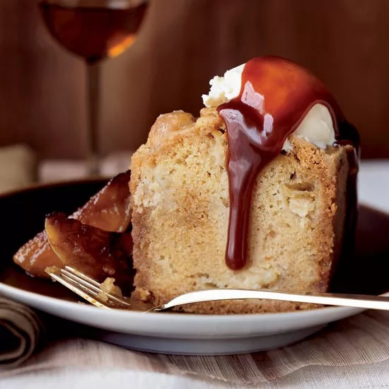

|

|
Cake:
- 3 cups all-purpose flour
- 1 teaspoon salt
- 1 teaspoon baking soda
- 1 ¼ cups vegetable oil
- 2 cups granulated sugar
- 3 large eggs
- 2 large Granny Smith apples (peeled, cored and cut into 1/2-inch dice)
- 1 stick unsalted butter
- ¼ cup heavy cream
- 1 cup light brown sugar
- 1 teaspoon pure vanilla extract
Toffee Sauce:
- 1 ½ cups granulated sugar
- ½ cup water
- ¾ cup plus 2 tablespoons heavy cream
- 2 tablespoons unsalted butter
- 1 tablespoon brandy
Caramelized Apples:
- 2 tablespoons unsalted butter
- 2 tablespoons light brown sugar
- 3 large Granny Smith apples (peeled, cored and cut into 8 wedges each)
- ⅛ teaspoon cinnamon
- 2 tablespoons water
- Vanilla ice cream (for serving)
|
- Preheat the oven to 325°. Butter and flour a 9-inch springform tube pan. In a medium bowl, whisk the flour with the salt and baking soda. In a large bowl, whisk the oil with the granulated sugar. Whisk in the eggs one at a time. Add the dry ingredients and whisk until smooth. Fold in the diced apples with a rubber spatula. Scrape the batter into the prepared pan and bake in the lower third of the oven for about 1 hour and 15 minutes, or until a toothpick inserted in the center of the cake comes out clean. Let cool slightly.
- Meanwhile, in a medium saucepan, combine the butter, cream and brown sugar and bring to a boil over moderate heat, stirring. Remove the toffee glaze from the heat and stir in the vanilla.
- Place the warm cake (still in its pan) on a rimmed baking sheet. Pour the hot glaze over the cake and let it seep into the cake, poking lightly with a toothpick. Let the cake cool completely, about 2 hours. Invert the cake onto a plate, and invert again onto another plate, right side up.
- In a medium saucepan, combine the sugar and water and bring to a boil over high heat, stirring until the sugar dissolves. Using a moistened pastry brush, wash down any sugar crystals on the side of the pan. Cook without stirring until a medium-amber caramel forms, about 5 minutes. Remove from the heat and quickly but carefully stir in the cream and butter. Simmer the sauce over moderate heat for 2 minutes, then remove from the heat and stir in the brandy. Pour the toffee sauce into a pitcher.
- In a large skillet, melt the butter and the brown sugar. Add the apples and cinnamon and cook over moderately high heat, turning the apples once or twice, until they are tender and caramelized, about 10 minutes. Add the water to dissolve the caramel in the skillet, then transfer the caramelized apples to a plate.
- Slice the cake and serve with the caramelized apples, toffee sauce, and vanilla ice cream.
|